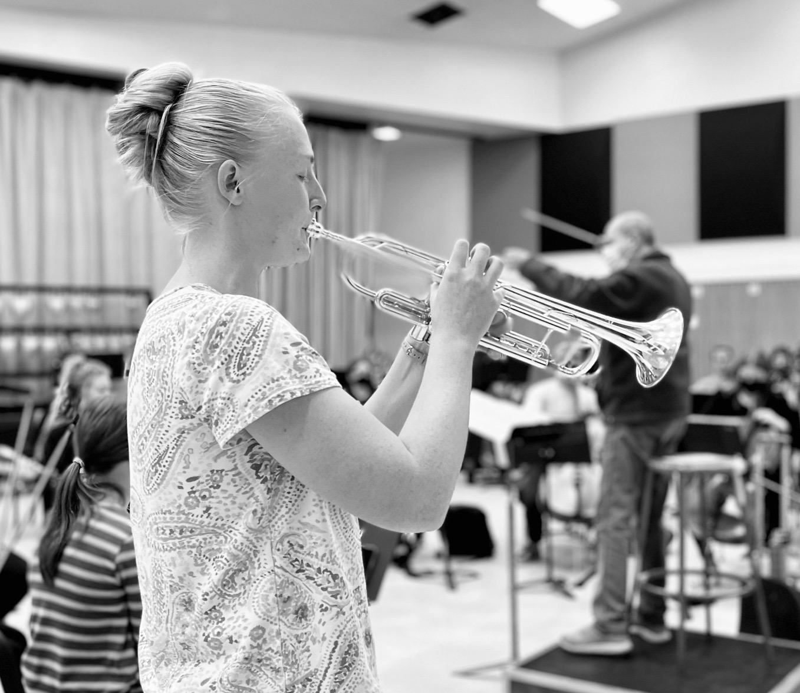

Private lessons in Logan, UT for piano, trumpet, and other brass instruments
My goal is to help everyone find the joy of making music and be enthusiastic about practicing!
To schedule a lesson, contact me by phone 801-644-1283 or email at amydespain365@gmail.com. We meet weekly at a time that works for you. I teach from my home in Logan, Utah.
Prices are $20 for a half hour, or $35 for an hour.
 I began the exciting journey of learning the trumpet at the age of 12 when I quickly fell in love with the instrument. I am finishing my music education degree from Utah State and currently student teaching at South Cache Middle School.
I have performed with the American Festival Orchestra, the USU Wind Ensemble, the Caine Brass Quintet, and USU's Symphony Orchestra. In 2018, I participated in a trumpet ensemble that performed for the International Trumpet Guild in San Antonio, Texas, and in 2022 won USU's concerto competition.
When not playing the trumpet, you can find me making delicious creations in the kitchen or going for long runs in the sun!